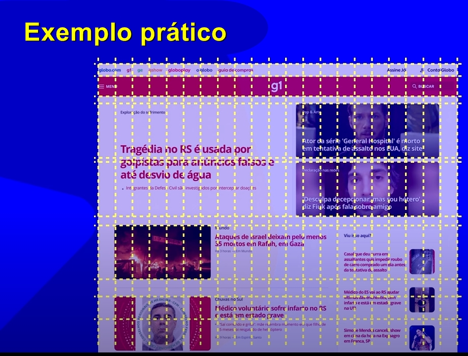

A específicação de Grid Layout surgiu em 2011 sendo a primeira versão a ser citada como padrão que virou 'wyse candate'.
A específicação é conhecida como [ CSS Grid Layout Module Level 1].
Exemplo prático de Grid Layout no site do G1
4:52
Aqui na imagem abaixo vemos a maneira como se distribuem os elementos do site G1 dentro da Grid, e o mesmo acontece por exemplo se visualizarmos o site em tela de celular onde os elementos se adaptam em telas menores e estreitas.
...................
Então vemos no exemplo do site do G1 abaixo, que as partes tracejadas formam as colunas verticalmente, e as partes horizontais formam as linhas.

A específicação de Grid Layout surgiu em 2011 sendo a primeira versão a ser citada como padrão que virou 'wyse candate'.
Ainda nos exemplo a seguir, o professor delimita|marca a área com linhas brancas as quas seguem as linhs tracejadas e assim formam os 'blocos'.